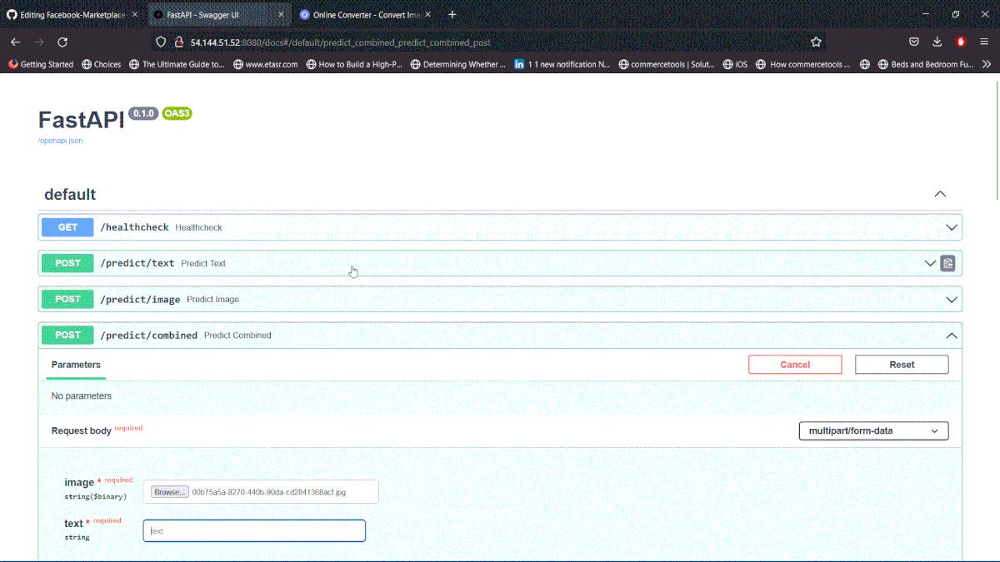

About Me
Hi! I'm Areeb, a passionate data professional, with a background in mathematics, physics, e-busines, and data science, having graduated from Warwick University in 2021. My main dissertation project focused on developing an academic timetabling algorithm using Generative Adversarial Networks and Evolutionary Algorithms (EA-GAN).
During my search for a data science project, I got involved in research with the Warwick Data Science Society concerning applying clustering algorithms to UK Parliament data to identify common parliamentary constituencies based on voting behaviour. completed a data and AI specialist bootcamp with AiCore where I worked on industry-standard projects, the two main projects being a data collection pipeline to scrape product data from Amazon and a search ranking system which gave relevant product category output after assessing probablities from the image and text data input using a multi-modal neural network. Last but not least, I completed a data science fellowship with fellowship.ai where in a team based setting, I tackled the problem of generating image masks from bi-temporal images which were taken pre and post disaster using Siamese Networks.
In my free time, I like to keep up to date with the lastest AI developments such as LLMs, prompt engineering, and applications of AI in healthcare in modern times. Apart from work and studies, I do love photography, playing table tennis and fifa where I do get extremely competitive in the last two.
Fun Fact! I presented my dissertation research in the OR63 conference!

Projects
Facebook Marketplace Search Ranking

A demonstration of my specialism project in the AiCore using a Gif image where the model returns probabilities when an image of any project or a text description or both are entered on the FastAPI server. This project fine-tuned a ResNET50 and implemented a pre-trained BERT model.
Skills
- Python
- SQL
- R
- HTML
- CSS
- JavaScript